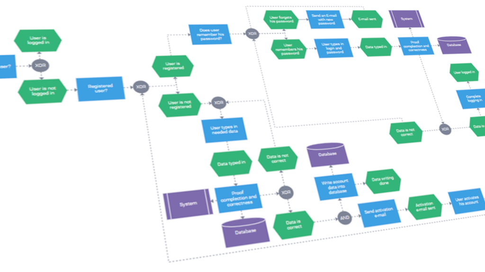
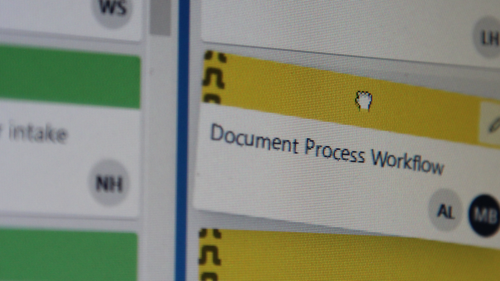

Growth Statement
Growth statement goes here
Blah
Blah
Blah
Blah
Blah
The first few sections have to be a certain number of pixels long or the the navbar collapsing script throws a fit
Hence all the blahs
Artifacts
Growth artifacts are things, physical or virtual, that exhibit improvement in the person who made the thing in question. It could be the result of a school project, a personal project, or anything really. If it shows an improvement in myself, it belongs in here.
Artifact 1
My 3D Printer
Normally, when someone says "this is my ____", they mean that they bought or inherited it. However, my relationship with this printer goes a bit deeper than a simple purchase. The printer is an Anet A8, a 3D printer kit that involves a lot of assembly. Side effects of this assembly process is that you end up learning a lot about how the printer works, and you feel comfortable making modifications to the printer later on. There is a pretty large community dedicated to the printer, and they regularly share 3D printable parts that can be used to further the capabilities of the printer.
So how does this exhibit growth? At the beginning of the 2020-21 school year, my printer had upgrades that were only physical changes to the printer, nothing that was actually too difficult to integrate into the existing mechanisms. However, I decided that I wanted my printer to have automatic bed leveling functionality. In order to get this functionality, there has to be a probe on the print-head that can sense the build surface, and also not interfere with the printer while it is printing. I wanted to make this probe as cheaply as possible, so I used parts that I already had lying around. I decided that I would take the current Z axis limit switch and attach it to a servo. Then, I would attach the servo to the print head. I would then configure the printer's firmware to move the servo down, deploying the probe when it needs to use the probe, and then move the servo back up, retracting the probe when it needs to perform actions that could damage the deployed probe.
I started by mounting the servo to the print head. I found a CAD model of the cooling fan that my printer uses, so I modified the back half of the casing model to have a place for the servo to be zip-tied in place. I printed this piece, and installed it in place of the original fan casing. Then, I mounted the Z axis end stop on to the end of a custom printed servo arm.
So with the hardware integrations done, it was time to connect everything to the printer's control board. This is where the real challenge began. The control board was never designed to have this kind of functionality, so I had to do a bit of reverse engineering. The servo has 3 wires, two for power, one to control the position. The power wires were pretty straight forward, but I had no idea what to do with that control wire. Normally, there would be a designated place on the board for this wire to connect to, but there was no such place on this board. There was, however, an unused connector. I'm still not sure what it is supposed to be used for, but one of the pins on this connector was a digital output pin coming straight from the main processor. I soldered the wire to this pin, and then configured the marlin firmware to treat that digital pin as a servo.
Now came the software integration. Luckily, marlin natively supports servo mounted probes. However, the configuration process was quite complicated. I had to calculate the precise position of the deployed probe relative to the nozzle, which was further complicated by the imprecise way that servos move to specific angles, which was further complicated by the unorthodox way that the servo was connected to the board. Nevertheless, I got it working. You can see it featured in the video at the top of this website's home page. This was most certainly the most complex upgrade I have ever made to the printer, but also the most useful. One of the most common problems with mine, and many other 3D printers is the bed leveling. This issue is easily fixed, but the process of manually leveling a bed takes a couple minutes. Those minutes add up quickly, especially when your print bed is held on by some wing nuts that get rotated slightly by the vibrations of each print. I would estimate that this modification has saved me more than double the time that it took to install.
Artifact 2
Artifact 2 stuff goes here
Blah
Artifact 3
Artifact 3 stuff goes here
Blah
5 Qualities
The 5 Qualities are aspects that the Dayton Regional STEM School looks for in their students. These qualities can define one's success, both independently and in the workplace.
Creativity
It's easy to get your mind stuck on art when talking about this quality, but creativity in this context is much closer to problem solving. Originality is key to solving any problem with more complexity than a multiple choice quiz.
Collaboration
Everybody that refuses to work with others is effectively stranding themselves on an island. That approach might work for small tasks, but most larger projects cannot be done in a practical time-frame with a single person working on them.
Communication
This one goes hand-in-hand with collaboration. In order to work well with other people, you have to communicate well with other people. It doesn't matter how good your work is if someone else already did it.

Inquiry
You never know everything there is to know, which is why it is important to not be afraid to ask questions. You also must be respectful to other people's questions, even if they might seem stupid.

Persistence
Some tasks are fun to work on, and some aren't. Either way, stuff needs to get done, and a team member that gives up at the first sign of difficulty does not help.